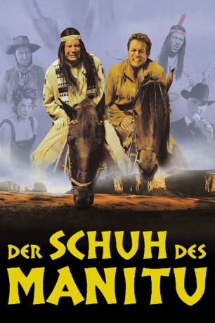

#3763 Der Schuh des Manitu
 
 IMDB-Wertung: 6.6 / 10
IMDB-Wertung: 6.6 / 10  Metascore: 0
Metascore: 0 
Der Apachenhäuptling Abahachi hat vom Geschäftsmann Santa Maria ein Lokal gekauft, damit sein Stamm endlich auch über ein “Stammlokal” verfügen kann. Für den Kauf hat Abahachi bei den Schoschonen einen Kredit in Form eines Sackes mit Goldstücken aufgenommen. Als Abahachi und sein Blutsbruder Ranger bei der Übergabe des Lokals feststellen, daß sie vom Geschäftsmann Santa Maria hereingelegt wurden, kommt es zu einem Eklat: Santa Maria erschießt den anwesenden Sohn des Häuptlings der Schoschonen, der den Sack mit den Goldstücken überbracht hatte. Santa Maria und seine Männer flüchten mit dem Gold.
Jahr: 2001
Dauer: 92 Minuten
FSK: 6
Land: Deutschland Studio: Constantin FilmTonspuren:
Untertitel:
Auflösung: 1080p (1920x864) Größe: 7680 MB
Genre: Komödie, Western
Regisseur:  Michael Herbig
Michael Herbig
Drehbuch: Noah Baumbach
Soundtrack:
Darsteller:
 Michael Herbig als Abahachi / Winnetouch / Grauer Star, extended edition
Michael Herbig als Abahachi / Winnetouch / Grauer Star, extended edition Sky du Mont als Santa Maria
Sky du Mont als Santa Maria Marie Bäumer als Uschi
Marie Bäumer als Uschi Rick Kavanian als Dimitri
Rick Kavanian als Dimitri Oliver Wnuk als Jack
Oliver Wnuk als Jack Anke Engelke als Mutter, extended edition
Anke Engelke als Mutter, extended edition Natalia Avelon als Uschi als Teenager, extended edition
Natalia Avelon als Uschi als Teenager, extended edition Christian Tramitz als Ranger
Christian Tramitz als Ranger- Hilmi Sözer als Hombre
 Tim Wilde als John
Tim Wilde als John Siegfried Terpoorten als Jim
Siegfried Terpoorten als Jim- Robinson Reichel als Joe
- Irshad Panjatan als Häuptling Listiger Lurch
- Tim Sikyea als Berater Schoschone #1
- Robert Alan Packard als Berater Schoschone #2
- Salvatore Pascale als Kleiner Schoschone
- Antonio Ramirez als Falscher Hase
- Josef Hannesschläger als Barmann
- Gerd Lohmeyer als Sheriff
- Alexander Held als Karl May
- Diana Herold als Blonde Squaw
- Paul Hayes als Sklave am Fenster
- Herbert Feuerstein als Apachenfotograf, extended edition
- Sinan Palanci als Abahachi als Kind, extended edition
- Kenan Palanci als Winnetouch als Kind, extended edition
- Philipp Krause als Vater, extended edition
- Roland Künzel als Kiowa Lehrer, extended edition
- Regine El Gokhy als Apachenhebamme, extended edition
- Hanina Banaga als Grauer Star Dancer, extended edition
- Patricia Dick als Grauer Star Dancer, extended edition
- Aloun Phetnoi als Breakdance Double, extended edition
- Mariachi Acapulco als Mexikanischer Musiker, extended edition
- Lia Sophie Dittner als Abahachi / Winnetouch als Baby, extended edition
 Friedrich Schoenfelder als Erzähler
Friedrich Schoenfelder als Erzähler
Datei: X:\2001\Schuh des Manitu, Der (2001, FSK6, 1920x864).mkv seit 07.06.2016
Festplatte: HD 1996-2002
 Es gibt insgesamt 102 Filme in der Gruppe '2001'
Es gibt insgesamt 102 Filme in der Gruppe '2001'